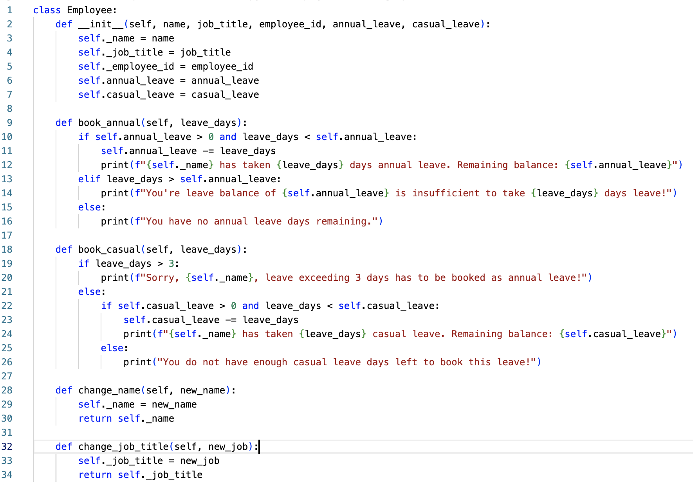
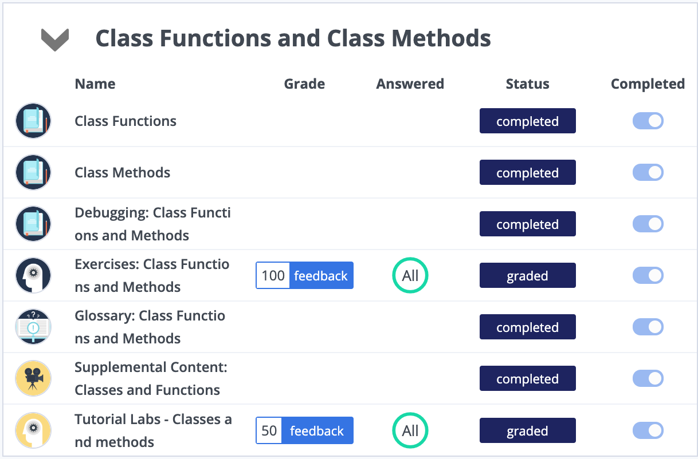

Unit 2: Artefacts
Collaborative Discussion
Part of this unit was to continue the discussion of Unit 1 by responding to two of our peers.
Peer Post 1

Response 1

Peer Post 2

Response 2

Comments
Prior to starting Unit 2, I had already read through some of the other posts on the discussion forum, which lead me to my opinion as stated on the Unit 1 Artefact page. In my response to my peers, I made it clear that my ranking was heavily influenced by my job, and that it would have likely differed if I had approached it from a different angle. This leads me to the conclusion that, although it is subjective, there are some factors which are more important in terms of reusability than others, but it generally depends on the task at hand.
Python Program: Protected and Unprotected Values
Task: Write a Python program to achieve basic employee-related functionality which includes retaining employee details and allowing an employee to book a day of annual leave. Extend the Python program you have now created to use protected and unprotected variables.
This is a very simple program to meet the above mentioned requirements. When an instance of the "Employee" class is created, the name, job title, employee id, and annual/casual leave balances are stored within that instance. I have decided to make the name, job title and employee id protected variables, so that they cannot be accessed directly from outside the class hierarchy. Using the "book_annual" method, the employee can book annual leave. The program checks whether the user has enough annual leave balance left to book this leave. If yes, the program subtracts the requested leave from the overall balance and informs the user of the booking success.
Similarly the program will perform the same set of actions for the casual leave balance. However, the system ensures that any leave exceeding 3 days is booked as annual leave.
Codio
As part of my studies and practice, I completed the "Class Functions and Class Methods" unit on Codio.
